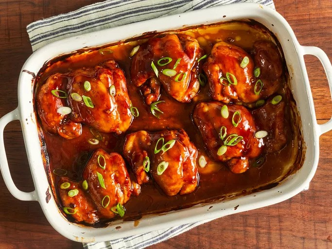

Baked Teriyaki Chicken

The Inception
A contemporary take on the traditional Japanese meal teriyaki chicken is baked teriyaki chicken.
It became popular as a low-fat cooking method that catered to consumers who were health-conscious and wanted a healthier option than the conventional grilled or pan-fried variants.
The sauce, which is usually made of soy sauce, mirin, sugar, and occasionally sake, is what gives teriyaki dishes their distinctive sweet-savory flavors.
To make the dish, just cover chicken pieces in the sauce and bake them in the oven until they become soft and caramelized.
By using this technique, you not only use less oil but also give the chicken more time to fully absorb the spices.
Because of its delectable flavor, simplicity of preparation, and capacity to satiate appetites for excellent yet nutritious meals, baked teriyaki chicken has become more popular throughout the world.
Ingredients
- ½ cup white sugar
- ½ cup soy sauce
- ¼ cup cider vinegar
- 1 tablespoon cornstarch
- 1 tablespoon cold water
- 1 clove garlic, minced
- ½ teaspoon ground ginger
- ¼ teaspoon ground black pepper
- 12 boneless, skinless chicken thighs
Easy Steps for Perfect Flavor
- Preheat the oven to 425 degrees F (220 degrees C). Lightly grease a 9x13-inch baking dish.
- Combine sugar, soy sauce, cider vinegar, cornstarch, cold water, garlic, ginger, and pepper in a small saucepan over low heat.
Simmer, stirring frequently, until teriyaki sauce thickens and bubbles, 3 to 5 minutes. Remove from the heat.
- Place chicken thighs in the prepared baking dish. Brush both sides of each thigh with the sauce. Reserve any extra sauce for basting.
- Bake in the preheated oven for 30 minutes.
- Flip chicken and brush with sauce.
Continue to bake, basting with remaining sauce every 10 minutes, until no longer pink and juices run clear, 20 to 30 more minutes.
- Serve hot and enjoy!